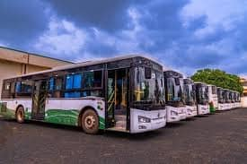

Iṣẹ́ Ọkọ Àgbègbè-Ìpínlẹ̀
Fresh Air Mass Transit n pese iṣẹ́ ọkọ akero àgbègbè-ìpínlẹ̀ tí o ní ẹrọ onígbàgbọ́ àti isikan itunu. A so Yola pọ̀ pẹ̀lú àwọn ìlu pàtàkì kaakiri Nàìjíríà pẹ̀lú ìmọ̀lára lórí aabo àti ìṣe ìgbà-akóko.
Ṣe abeere àwọn ìlú rẹ pẹ̀lú Fresh Air Transit fun irin-ajo itunu àti tó ní aabo.